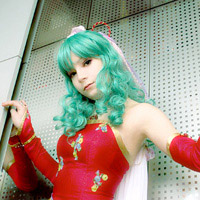

코스튬 플레이 컨퍼런스 ‘코스튬 플레이×게임!’
게임업계 관계자, 코스튬 플레이 관계자, 해외의 일본문화 애호가 등이 한곳에 모여, 앞으로 더욱 해외 전개가 예상되는 게임과 코스튬 플레이의 관계성, 비즈니스 가능성, 과제점 등에 대하여 이야기합니다. 대화 중에 깜짝 놀랄 퍼포먼스가!!
| 일시 | 9월 17일(금) 12:00∼13:00(예정) |
|---|---|
| 장소 | 마쿠하리 멧세 홀 8의 이벤트 스테이지 |
| 테마 | '게임&코스튬 플레이의 최신 해외사정과 게임시장 성장의 힌트'(안) |
*비즈니스데이의 프로그램이므로 일반 입장객은 보실 수 없습니다.
내용
- 아나운스멘트
- ‘게임과 댄스의 밀월’ 다카하시 노부유키씨(스튜디오 하드 디럭스 대표)
- 관측예1: ‘록맨2-음악 리스펙트-작사-연주가창-애니메이션’
- 관측예2: ‘하츠네 미쿠-MMD-댄스CG-캐릭터-모델 공유화’
- 관측예3: ‘도호-치르노-산수교실-댄스영상-코스튬플레이 댄스’
- ‘도쿄대학 마루큐프로젝트’에 의한 코스튬 플레이 댄스
- 게스트의 보고 ‘세계의 코스튬 플레이어들은...’
- 모더레이터: 다카하시@HDX
- 게스트: 재키 도사이 코스튬 플레이 닷컴 일본대표
- 게스트: 다이몬 타로 코스모드(Cosmode)지 편집장
- *그 외의 게스트는 현재 섭외 중. 결정되는 대로 사이트에 공시하겠습니다.
- 해외의 코스튬 플레이어 인터뷰
아데라(미국)- 
히즈에(독일)
Lee Ruka(대만)
다채로운 코스튬 플레이 기획(일반 공개일)
도쿄 게임쇼 2010에서는 일반 공개일에 ‘야스라기노 몰’(마쿠하리 멧세, 홀 3과 4 사이의 공간)을 코스튬 플레이 구역으로 설정하였습니다. 올해는 국내외에서 저명한 코스튬 플레이어를 비롯하여 독특한 코스튬 플레이 팀도 게스트로 참가 예정. 더욱이 ‘코스튬 플레이 그랑프리’(기획 협력: COSGROOVE)와 ‘코스튬 플레이 댄스나이트(동) 등 각종 기획을 준비하여 코스튬 플레이어를 기다리고 있습니다.
코스튬 플레이 그랑프리
- ★심사기간: 9월 18일(토) 10:00∼17:00
- ★사전등록: Twitter를 이용한 응모
- ★회장 등록
- 자기 추천: 회장 내의 접수창구에 오시어 사진을 찍습니다.
- 타인 추천: 회장 내에서 스카우터(추천인)이 우수한 코스튬 플레이어를 찾아 냅니다.
- ★심사: 코스그루브 실행위원회 5명이 심사합니다.
- ★심사결과: 코스튬 댄스나이트 회장에서 발표(9월 18일(토) 오후 6시∼)
코스튬 플레이 댄스나이트
개최: 9월 18일(토) 18:00-20:00
장소: 마쿠하리 멧세 홀 8 이벤트 스테이지
해외에서 유명한 코스튬 플레이어 초빙
해외에서 카리스마 코스튬 플레이어를 초빙하여 국내 코스튬 플레이어, 코스튬 플레이 팬과 교류의 장을 마련합니다.
코스튬 포토세션
함께 모여 사진을 찍고 ‘코스모드’지에 실려보자!!
특설 코스튬 월(*1)을 배경으로 포토세션.
촬영한 사진은 ‘코스모드’지에 게재됩니다!!
*촬영한 사진이 모두 게재되는 것은 아닙니다.
*1) 코스튬 월이란 코스튬 플레이 촬영용으로 제작된 특별한 대형화면입니다.
코스튬 퍼포먼스 타임
깜짝 놀랄 코스튬 플레이 그룹이 등장합니다!!
코스튬 플레이 탈의실, 아침 일찍 오픈
아침 일찍 오셔서 입장대기열에 줄을 서시는 코스튬 플레이어를 대상으로 홀7에 있는 코스튬 플레이 탈의실을 일정시간(가이힌마쿠하리역 시발시간∼오전 8시까지 예정) 오픈합니다. 일찍 오셔서 의상을 갈아입고 TGS를 느긋하게 즐겨 주십시오.
아침의 탈의실 오픈시간은 시발시간∼오전 8시까지입니다. 아침 8시 이후에 오신 분은 이용하실 수 없으므로 양해해 주십시오. 아침 8시 이후에 오신 분은 그대로 일반 입장자의 대기열에 줄을 서 주십시오. ※개장 후에 탈의실로 이동해 주시기 바랍니다. 아침 8시까지 탈의실에 입장하신 분은 의상을 갈아 입고 그대로 일반 대기열의 끝으로 이동해 주십시오. 또한 아침 8시가 지나도 의상을 갈아 입는 중인 분은 옷을 갈아 입으신 후 바로 탈의실에서 나와 주십시오. 협력을 부탁드립니다.
코스그루브(COSGROOVE)란 코스튬 플레이 퍼포먼스 기획그룹입니다. 코스튬 플레이관계기업과 프리랜서 및 자원봉사로 구성되어 있습니다. 이번 도쿄 게임쇼 2010에서는 코스튬 플레이를 통하여 특히 해외의 코스튬 플레이어 여러분이 즐겨주실 수 있도록 각종 퍼포먼스, 이벤트를 도와드리고 있습니다. 앞으로도 잘 부탁드립니다.
관련기업 일람
■주식회사 팬아시아 파트너즈
일본과 아시아의 가교로서 투자사업, 컨설팅사업, 인재획득 지원 등 폭넓은 사업을 전개하고 있습니다.
■株式会社アンビションインターナショナル
일본의 콘텐츠를 폭넓게 해외로 전개하고, 또 적극적으로 해외의 콘텐츠를 일본에서 사업화하고 있습니다.
■■ 스튜디오 하드 디럭스 주식회사
창업이래 애니메이션, 코스튬 플레이, 게임 등 소위 오타쿠콘텐츠 창조와 프로듀스를 전개하고 있습니다.
코스그루브 웹사이트（http://www.cosgroove.com/korea/）